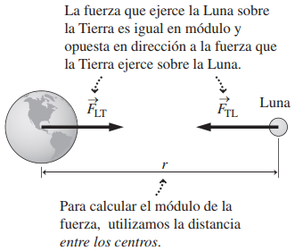
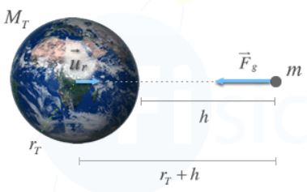

Sir Isaac Newton elaboró la base de lo que hoy se conoce como la ley de gravitación universal, basándose en las leyes de Kepler sobre el movimiento de los planetas y los estudios de Galileo.
Esta ley establece que los cuerpos, por el simple hecho de tener masa, experimentan una fuerza de atracción hacia otros cuerpos con masa, denominada fuerza gravitatoria o fuerza gravitacional. Esta fuerza, explica entre otras muchas cosas, por qué orbitan los planetas.

Por lo que podemos concluir que dos cuerpos, por el hecho de poseer masa, se atraen uno a otro, en sentidos opuestos, presentándose una fuerza de atracción entre ellos conocida como fuerza gravitatoria definida por la siguiente ecuación
\(\displaystyle \vec F_g=-G\cdot
\frac{ m_1 \cdot m_2}{d^2}\)
Donde:
\( \vec F_g\) - Es la fuerza gravitatoria entre dos cuerpos (Newtons - N)
m1, m2 - Masas de los dos cuerpos (kilogramos - kg)
d - Distancia que separa los dos cuerpos (metros - m)
G - Constante de la gravitación universal = 6.67 x 10-11 N·m2/Kg2
La anterior fórmula es la representación matemática de la
Ley de la gravitación universal
La fuerza de atracción entre dos cuerpos es directamente proporcional al producto de sus masas e inversamente proporcional al cuadrado de la distancia que los separa.
Analizando la ecuación podemos concluir que la fuerza de atracción entre dos cuerpos:
⦁ Aumenta al aumentar las masas de los cuerpos
⦁ Disminuye al aumentar la distancia que los separa
La gravedad es una fuerza sin contacto de «acción a distancia».
Dicha ecuación, únicamente sirve para masas puntuales y cuerpos esféricos, ya que estos se comportan como si toda su masa se concentrara en su centro. Por tanto, la distancia se mide desde sus centros.
La atracción que ejercemos sobre la Tierra.
Las fuerzas gravitacionales, como fuerzas que son, obedecen el principio de acción y reacción o tercera ley de Newton, por lo tanto: La fuerza con que la Tierra atrae a cualquier cuerpo con masa, incluidos nosotros mismos, es exactamente igual y de sentido contrario a la fuerza con que los cuerpos atraemos a la Tierra.
¿Entonces por qué la Tierra no nos persigue cuando nos alejamos del suelo? Nuestra masa es muy inferior a la de la Tierra, por lo que cuando la fuerza gravitacional actúa sobre la Tierra y sobre nosotros, ella se mueve extremadamente poco hacia nosotros (despreciable) y nosotros mucho hacia ella. No es lo mismo aplicar la misma fuerza a una pelota de golf que a un elefante y que posee más masa. Obviamente la hormiga se moverá más rápido.
La gravedad no depende de la masa de los cuerpos
Si un cuerpo de masa m se encuentra a una altura h sobre la superficie de la Tierra, la fuerza gravitacional que actúa sobre él es:
\(\displaystyle \vec F_g=-G\cdot \frac{ m_T \cdot m}{(d_T+h)^2}\)

De acuerdo con la segunda ley de Newton, esta fuerza gravitatoria imprimirá una aceleración en el cuerpo, de tal forma que:
\(\displaystyle \vec F_g=m\cdot \vec a\)
Igualando
\(\displaystyle \enclose{updiagonalstrike}{m}\cdot \vec a=-G\cdot \frac{ m_T \cdot \enclose{updiagonalstrike}{m}}{(d_T+h)^2}\)
\(\displaystyle \vec a= -G\cdot \frac{ m_T }{(d_T+h)^2}\)
Si consideramos que la altura es despreciable con respecto al valor del radio de la Tierra, podemos simplificar la expresión de la siguiente forma:
\(\displaystyle \vec a= -G\cdot \frac{ m_T }{(d_{T})^{2}}\)
Esta aceleración es lo que comúnmente llamamos aceleración de la gravedad y representamos con la letra \(\vec g\). (g=-9.8 m/s2).
\(\displaystyle \vec g= -G\cdot \frac{ m_T }{(d_{T})^{2}}\)
Si te das cuenta, la aceleración con la que la Tierra atrae a los cuerpos no depende de su masa. Únicamente depende la masa de la Tierra y de la distancia a la que se encuentre.
Por lo tanto para calcular la gravedad en cualquier planeta tenemos que
\(\displaystyle \vec g= -G\cdot \frac{ m }{(d)^{2}}\)
Ejemplo 1. ¿Cuál es el valor de la gravedad en Marte si su masa es 6.42 x 1023 kg y su radio 3,397 km?.
Datos:
mM = 6.42 x 1023 kg
d = rM = 3,397 km = 3,397 x 103 m
G = -6.67 x 10-11 N·m2/kg2
\(\displaystyle \vec g= -G\cdot \frac{ m }{(d)^{2}}\)
\(\displaystyle \vec g= (-6.67\times{10}^{-11}\,N\cdot m^2/{kg}^2)\cdot \frac{ (6.42\times{10}^{23}\,kg) }{(3,397\times{10}^{3}\,m)^{2}}\)
\(\displaystyle \vec g= -3.71\,m/s^2\)
Ejemplo 2. Una masa de 800 kg y otra de 500 kg se encuentran separadas por 3 m, ¿Cuál es la fuerza de atracción que experimenta la masa?
Datos:
m1 = 800 kg
m2 = 500 kg
d = 3 m
Fg = ?
\(\displaystyle \vec F_g=-G\cdot \frac{ m_1 \cdot m_2}{d^2}\)
\(\displaystyle \vec F_g= (-6.67\times{10}^{-11}\,N\cdot m^2/{kg}^2)\cdot \frac{ (800\,kg) \cdot (500\,kg)}{(3\,m)^2}\)
\(\displaystyle \vec F_g=-2.964\times{10}^{-6}\,N\)
Ejemplo 3. ¿A qué distancia se encuentran dos masas de 6 x 10-2 kg y 7 x 10-3 kg, si la magnitud de la fuerza con la que se atraen es de 9 x 10-9 N?
Datos:
m1 = 6 x 10-2 kg
m2 = 7 x 10-3 kg
Fg = 9 x 10-9 N
d = ?
\(\displaystyle \vec F_g=-G\cdot \frac{ m_1 \cdot m_2}{d^2}\)
\(\displaystyle d=\sqrt{-G\cdot \frac{ m_1 \cdot m_2}{\vec F_g}}\)
\(\displaystyle d=\sqrt{(-6.67\times{10}^{-11}\,N\cdot m^2/{kg}^2)\cdot \frac{ (6\times{10}^{-2}\,kg) \cdot (7\times{10}^{-3}\,kg)}{(9\times{10}^{-9}\,N)}}\)
\(\displaystyle d=1.76\times{10}^{-3}\,m\)